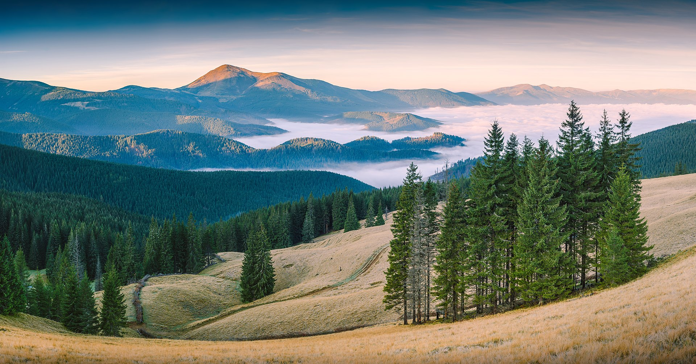
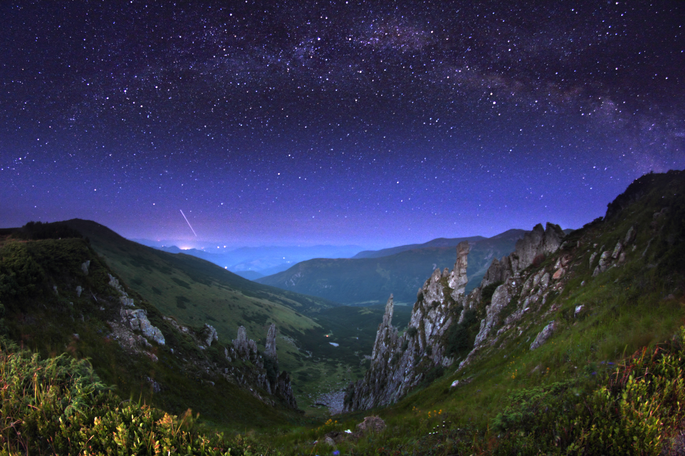

|  |  |
Where is it
Ukrainian Carpathians (Ukrainian: Українські Карпати) are a section of the Eastern Carpathians, within the borders of modern Ukraine. They are located in the southwestern corner of Western Ukraine, within administrative territories of four Ukrainian regions (oblasts), covering northeastern part of Zakarpattia Oblast, southwestern part of Lviv Oblast, southern half of Ivano-Frankivsk Oblast and western half of Chernivtsi Oblast.
They are stretching in general northwest–southeast direction, starting at the tripartite border point of Ukraine with Poland and Slovakia, and continuing towards Ukrainian border with Romania. In terms of geological classification, Ukrainian Carpathians belong to two distinctive categories, with major part belonging to the Outer Eastern Carpathians and minor part to the Inner Eastern Carpathians.
How it dividing
Within different regional and national traditions, there are several overlapping variants of divisions and designations for various Eastern Carpathian mountain ranges. Within the wider scope of the Ukrainian Carpathians, a section of the Outer Eastern Carpathians spaning southeastern corner of Poland, northeastern corner of Slovakia and western part of Ukraine is commonly known as the Eastern Beskids (Ukrainian: Східні Бескиди; Polish: Beskidy Wschodnie), while in Slovakia the term Meadowed Mountains (Slovak: Poloniny) is also used for the same mountain range. The scope of those terms varies in accordance to different traditions and classifications.
- Section of the Inner Eastern Carpathians, within Ukraine:
- Vihorlat Mountains (UA: Вигорлат) in Slovakia and Ukraine
- Makovytsia (UA: Маковиця)
- Velikyi Dil (UA: Великий Діл)
- Tupyi (UA: Тупий)
- Oaș Mountains (UA: Оаш гори) in Ukraine and Romania
- Maramureș Lowland (UA: Мармароська улоговина) in Ukraine and Romania
- Maramureș Mountains (UA: Мармароський масив) in Ukraine and Romania
- Section of the Outer Eastern Carpathians, within Ukraine:
- Wooded Beskids (UA: Лісисті Бескиди):
- Bieszczady Mountains (UK: Бещади); eastern section belongs to Ukraine
- Sanok-Turka Mountains (UK: Верхньодністровські Бескиди); eastern section belongs to Ukraine
- Skole Beskids (UA: Сколівські Бескиди)
- Gorgany (UA: Ґорґани)
- Pokuttia-Bucovina Beskids (UA: Покутсько-Буковинські Карпати)
- Polonynian Beskids (UA: Полонинські Бескиди):
- Smooth Polonyna (UK: Полонина Рівна)
- Polonyna Borzhava (UK: Полонина Боржава)
- Polonyna Kuk (UK: Полонина Кук)
- Red Polonyna (UK: Полонина Красна)
- Svydovets (UK: Свидівець)
- Chornohora (UK: Чорногора)
- Hrynyavy Mountains (UK: Гриняви)